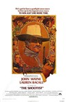
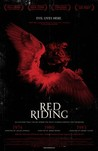
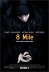

Movie Releases By Score

|
1501.
Murderous Maids
Release Date:
April 19, 2002
The true story of the most sensational crime in French history. (Rialto Pictures)
|

|
1502.
Last Orders
Release Date:
December 7, 2001

A group of friends gather to mourn the death of a friend. To carry out his last wish, they embark on a journey to take his ashes from London to the sea.
|
1503.
Ça commence aujourd'hui
Release Date:
September 8, 2000
A kindergarten teacher (Torreton) in a small French town faces the fallout that results when the local coal mine, the area's major employer, must close.
|
|

|
1504.
Mr. Death: The Rise and Fall of Fred A. Leuchter, Jr.
Release Date:
December 29, 1999

A tale of ignorance, self-deception, and vanity. Documentarian Errol Morris sews together a patchwork of diverse viewpoints that seek to uncover the central mystery behind Fred Leuchter's motivations. (Lions Gate Films)
|

|
1505.
Afghan Star
Release Date:
June 26, 2009
After 30 years of Taliban and wartime rule, pop culture is creeping back into Afghanistan in the form of Afghan Star, an enormously popular American Idol–type contest. Filmmaker Havana Marking follows the dramatic stories of four of the contestants over three months, from regional auditions to the finals in Kabul, giving us a new, and more human, look at this troubled part of the world. (Zeitgeist Films)
|

|
1506.
Tropical Malady
Release Date:
June 29, 2005
This lyrical and mysterious new film by maverick Thai director Apichatpong Weerasethaku chronicles the mystical love affair between a young soldier and the country boy he seduces, soon to be disrupted by the boy's sudden disappearance. (Strand Releasing)
|

|
1507.
Logan Lucky
Release Date:
August 18, 2017
Trying to reverse a family curse, brothers Jimmy (Channing Tatum) and Clyde Logan (Adam Driver) set out to execute an elaborate robbery during the legendary Coca-Cola 600 race at Charlotte Motor Speedway.
|

|
1508.
Paradise: Hope
Release Date:
December 6, 2013
The third installment in Ulrich Seidl’s Paradise trilogy, Paradise: Hope tells the story of overweight 13-year-old Melanie and her first love. While her mother travels to Kenya (Paradise: Love) and her aunt (Paradise: Faith) does missionary work, Melanie spends her summer vacation at a strict diet camp for overweight teenagers. Between physical education and nutrition counseling, pillow fights and her first cigarette, Melanie falls in love with the camp director, a doctor 40 years her senior. As the doctor struggles with the guilty nature of his desire, Melanie had imagined her paradise differently. [Strand Releasing]
|

|
1509.
The Aura
Release Date:
November 17, 2006
On his first ever hunting trip, in the calm of the Patagonian forest, a shy, epileptic taxidermist who secretly dreams of executing the perfect robbery stumbles upon an opportunity to make his dreams come true. (IFC First Take Films)
|

|
1510.
Alice Doesn't Live Here Anymore
Release Date:
December 9, 1974

A recently widowed woman is on the road with her precocious young son, determined to make a new life for herself as a singer.
Ellen Burstyn won the "Best Actress" Oscar for her performance in this memorable comedy-drama about a widowed mother suddenly forced to take charge of her own life.
Director Martin Scorcese guides a wonderful cast including the very young future Academy Award-winner Jodie Foster, singer-actor Kris Kristofferson, Harvey Keitel and Oscar-nominee Diane Ladd.
In the early portions of the film, Alice works as a waitress at a diner owned by "Mel" (Vic Tayback), and these scenes served as the springboard for the popular Seventies' TV sit-com, Alice.
|
1511.
Dazed and Confused
Release Date:
September 24, 1993
A period ensemble piece about a group of Texas teenagers on the last day of high school and the night that follows in 1976.
|
|

|
1512.
Missing
Release Date:
March 12, 1982
When an idealistic American writer disappears during the Chilean coup d'état in September 1973, his wife and father try to find him.
|

|
1513.
The Betrayal - Nerakhoon
Release Date:
November 21, 2008
Shot over the course of 23 years, Thavi narrates his own story as a child surviving the Vietnam war and then as a young man struggling to overcome the hardships of immigrant life, an experience shared with his mother in war. Breathtaking and compelling, renowned cinematographer Ellen Kuras’s film is a poetic, deeply personal film, a powerfully eloquent tribute of what it means to be in exile, of the far-reaching consequences of war, and of the resilient bonds of family. Thavisouk’s unforgettable journey reminds us of the strength necessary to survive and of the human spirit’s inspiring capacity to adapt, rebuild, and forgive. [Celluloid Dreams]
|

|
1514.
2046
Release Date:
August 5, 2005
Picking up where "In the Mood for Love" left off, 2046 is a visually seductive reverie of memory and regret, refracted through a serial womanizer's experiences with six women. (Sony Pictures Classics)
|

|
1515.
Tickling Giants
Release Date:
March 15, 2017
In the midst of the Egyptian Arab Spring, Bassem Youssef makes a decision that’s every mother’s worst nightmare… He leaves his job as a heart surgeon to become a full-time comedian. Dubbed, “The Egyptian Jon Stewart,” Bassem creates the satirical show, Al Bernameg. The weekly program quickly becomes the most viewed television program in the Middle East, with 30 million viewers per episode. The Daily Show with Jon Stewart averaged two million viewers. In a country where free speech is not settled law, Bassem’s show becomes as controversial as it popular. He and his staff must endure physical threats, protests, and legal action, all because of jokes. As Bassem attempts to remain on the air, keep his staff safe, and not get arrested, he continues to let those in power know they’re being held accountable. Despite increasing danger, the team at Al Bernameg employ comedy, not violence, to comment on hypocrisy in media, politics, and religion. Tickling Giants follows the team of Al Bernameg as they discover democracy is not easily won. The young women and men working on Bassem’s show are fearless revolutionaries, who just happen to be really, really funny. No unicorns or falafel were harmed in the making of this film.
|

|
1516.
Abortion: Stories Women Tell
Release Date:
August 12, 2016
In 1973 the U.S. Supreme Court decision Roe v. Wade recognized the right of every woman in the United States to have an abortion. Since 2011, over half the states in the nation have significantly restricted access to abortions. In 2016, abortion remains one of the most divisive issues in America, especially in Missouri, where only one abortion clinic remains open, patients and their doctors must navigate a 72-hour waiting period, and each year sees more restrictions. Awarding-winning director and Missouri native Tracy Droz Tragos sheds new light on the contentious issue with a focus not on the debate, but rather on the women themselves – those struggling with unplanned pregnancies, the providers who show up at clinics to give medical care, as well as the activists on both sides of the issue hoping to sway decisions and lives. Abortion: Stories Women Tell offers an intimate window into the lives of these women through their personal stories. Some are heartbreaking and tender some are bleak and frightening; some women, on both sides of the issue, find the choice easy to make due to their own circumstances and beliefs, while others simply inform us of the strength and capacity of women to overcome and persevere through complicated and unexpected circumstances. [HBO]
|

|
1517.
Pusher II: With Blood On My Hands
Release Date:
August 18, 2006
Pusher II tells the story of Tonny, a crook from the Copenhagen underworld whose previous run-in with a baseball bat has left his mind addled and unreliable. Having just been released from prison, Tonny tries to bring order to his life and gain the respect of his father, the Duke, a notorious gangster who appears to have nothing but contempt for his son. Tonny soon learns that nothing in this new life comes easy. Trying to repay a debt held over from prison, he makes misstep after misstep, running further afoul of the Duke. On top of it all, Tonny must contribute to the upbringing of a baby boy which may or may not be his own. Battling the scorn of all around him as well as his own drug-fueled delirium, Tonny must forge a path toward some form of redemption, or perish in the attempt. [Magnolia Pictures]
|

|
1518.
Kung Fu Hustle
Release Date:
April 8, 2005
Set amid the chaos of pre-revolutionary China, small time thief, Sing (Chow), aspires to be one of the sophisticated and ruthless Axe Gang whose underworld activities overshadow the city. (Sony)
|

|
1519.
Meru
Release Date:
August 14, 2015
Three elite climbers struggle to find their way through obsession and loss as they attempt to climb the Shark's Fin on Mount Meru, one of the most coveted prizes in the high stakes game of Himalayan big wall climbing.
|

|
1520.
A Quiet Passion
Release Date:
April 14, 2017
The story of American poet Emily Dickinson from her early days as a young schoolgirl to her later years as a reclusive, unrecognized artist.
|
1521.
Command and Control
Release Date:
September 14, 2016
Command and Control reveals the long-hidden story of a deadly accident at a Titan II missile complex in Damascus, Arkansas in 1980. Woven through the Damascus story is a riveting history of America’s nuclear weapons program, from World War II through the Cold War, much of it based on recently declassified documents. A cautionary tale of freak accidents, near misses, human fallibility and extraordinary heroism, Command and Control forces viewers to confront the great dilemma that the U.S. has faced since the dawn of the nuclear age: how do you manage weapons of mass destruction without being destroyed by them?
|
|
1522.
The Aviator
Release Date:
December 17, 2004
Leonardo DiCaprio stars as aviation pioneer Howard Hughes in this biopic directed by Martin Scorsese.
|
|
1523.
Panic
Release Date:
January 12, 2001
Alex (Macy) is dissatisfied with his family life, and his work in the father's (Sutherland) business...as a professional hitman. When he seeks the help of a counselor (Ritter), an encounter with a troubled young woman (Campbell) in the waiting room changes his perspective.
|
|

|
1524.
My Own Private Idaho
Release Date:
October 18, 1991
In this loose reworking of Shakespeare's "Henry IV," Reeves stars as the prodigal son who slums in the Pacific Northwest's junkie lowlife milieu with Phoenix, who plays a narcaleptic hustler.
|

|
1525.
The Princess Bride
Release Date:
September 25, 1987
A young boy listens to while his grandfather reads him the adventures of Buttercup (Wright), the most beautiful woman in the world, and Westly (Elwes), the man she loves, in the fairy-tale kingdom of Florin. [MGM]
|

|
1526.
Hukkle
Release Date:
November 14, 2003
A "fictional" documentary detailing the natural history of life in a Hungarian village.
|

|
1527.
Voyage of Time: The IMAX Experience
Release Date:
October 7, 2016
An examination of the birth and death of the known universe.
|

|
1528.
Blindspotting
Release Date:
July 20, 2018
Collin (Daveed Diggs) must make it through his final three days of probation for a chance at a new beginning. He and his troublemaking childhood best friend, Miles (Rafael Casal), work as movers, and when Collin witnesses a police shooting, the two men’s friendship is tested as they grapple with identity and their changed realities in the rapidly-gentrifying neighborhood they grew up in.
|
1529.
Abuse of Weakness
Release Date:
August 15, 2014
A stroke-afflicted filmmaker (Isabelle Huppert) is manipulated by a notorious con man.
|
|

|
1530.
The Mustang
Release Date:
March 15, 2019
Roman (Matthias Schoenaerts), a convict in a rural Nevada prison who struggles to escape his violent past, is required to participate in an “outdoor maintenance” program as part of his state-mandated social rehabilitation. Spotted by a no-nonsense veteran trainer (Bruce Dern) and helped by an outgoing fellow inmate and trick rider (Jason Mitchell), Roman is accepted into the selective wild horse training section of the program, where he finds his own humanity in gentling an especially unbreakable mustang.
|

|
1531.
Trapped
Release Date:
March 4, 2016
Since 2010, 288 laws regulating abortion providers have been passed by state legislatures. In total, 44 states and the District of Columbia have measures subjecting abortion providers to legal restrictions not imposed on other medical professionals. Unable to comply with these far-reaching and medically unnecessary laws, clinics have taken their fight to the courts. As the U.S. Supreme Court decides in 2016 whether individual states may essentially outlaw abortion (Whole Woman’s Health v. Hellerstedt), Trapped follows clinic workers and lawyers who are on the front lines of the battle to keep abortion safe and legal for millions of American women.
|

|
1532.
Courage Under Fire
Release Date:
April 12, 1996
Lt. Colonel Serling (Washington) is sent home from the Gulf War and soon becomes embroiled in intrigue when he investigates the circumstances surrounding the death of medal-of-honor candidate Capt. Karen Walden (Ryan). (Twentieth Century Fox)
|

|
1533.
Have a Nice Day
Release Date:
January 26, 2018
A hard rain is about to fall on a small town in Southern China. In a desperate attempt to find money to save his fiancée’s failed plastic surgery, Xiao Zhang, a mere driver, steals a bag containing 1 million from his boss. News of the robbery spreads fast within the town and, over the course of one night, everyone starts looking for Xiao Zhang and his money.
|

|
1534.
Zero Days
Release Date:
July 8, 2016
Zero Days is a documentary thriller about the world of cyberwar. For the first time, the film tells the complete story of Stuxnet, a piece of self-replicating computer malware (known as a “worm” for its ability to burrow from computer to computer on its own) that the U.S. and Israel unleashed to destroy a key part of an Iranian nuclear facility, and which ultimately spread beyond its intended target. Zero Days is the most comprehensive accounting to date of how a clandestine mission hatched by two allies with clashing agendas opened forever the Pandora’s Box of cyberwarfare. Beyond the technical aspects of the story, Zero Days reveals a web of intrigue involving the CIA, the US Military's new cyber command, Israel's Mossad and Operations that include both espionage and covert assassinations but also a new generation of cyberweapons whose destructive power is matched only by Nuclear War.
|

|
1535.
Kramer vs. Kramer
Release Date:
December 19, 1979
Ted Kramer (Hoffman) must raise his son Billy (Henry) on his own after his wife (Streep) leaves him. After a time has passed she returns, wanting custody of the boy.
|

|
1536.
They'll Love Me When I'm Dead
Release Date:
November 2, 2018
Oscar-winning director Morgan Neville (20 Feet from Stardom) tells the provocative story of legendary director Orson Welles during the final 15 years of his life. No longer the “wonder boy” of Citizen Kane, Welles in 1970 was an artist in exile looking for his Hollywood comeback with a project called The Other Side of the Wind. For years, Welles worked on the film about an aging film director trying to finish his last great movie. Welles shot the picture guerrilla-style in chaotic circumstances with a devoted crew of young dreamers, all the while struggling with financiers and fate. In 1985, Welles died, leaving as his final testament the most famous unfinished film in movie history. The negative stayed in a vault for decades until now. With revelatory new insights from Welles collaborators including Peter Bogdanovich, Frank Marshall, Oja Kodar and daughter Beatrice Welles, They'll Love Me When I'm Dead is the untold final chapter of one of the greatest careers in film history: brilliant, innovative, defiant and unbowed. [Netflix]
|
|  |
1537.
The Shootist
Release Date:
August 20, 1976
A dying gunfighter spends his last days looking for a way to die with a minimum of pain and a maximum of dignity.
|

|
1538.
Finding Dory
Release Date:
June 17, 2016
Finding Dory reunites the friendly-but-forgetful blue tang fish Dory, with her friends Nemo and Marlin on a search for answers about her past. What can she remember? Who are her parents? And where did she learn to speak Whale?
|
1539.
Rescue Dawn
Release Date:
July 4, 2007
Based on the true story of an American pilot, Dieter Dengler is shot down during a top-secret mission. Taken hostage, he endures unimaginable conditions at the hands of cruel captors in a makeshift POW camp. Dengler's iron will to survive guides him and fellow prisoners in a meticulously planned, death-defying escape, only to discover the harsh realities of an unforgiving jungle beyond the camps walls. (MGM)
|
|

|
1540.
Blue Ruin
Release Date:
April 25, 2014
A beach bum finds his quiet life upended by dreadful news and sets off for his childhood home to carry out an act of revenge. Proving an inept assassin, he winds up in a brutal fight to protect his estranged family.
|

|
1541.
No Way Out
Release Date:
August 14, 1987
A coverup and witchhunt ensue after a politician (Gene Hackman) accidentally puts his mistress (Sean Young) in jeopardy.
|

|
1542.
Human Flow
Release Date:
October 13, 2017
Over 65 million people around the world have been forced from their homes to escape famine, climate change and war in the greatest human displacement since World War II. Human Flow, an epic film journey led by the internationally renowned artist Ai Weiwei, gives a powerful visual expression to this massive human migration. The documentary elucidates both the staggering scale of the refugee crisis and its profoundly personal human impact.
|

|
1543.
Happy Feet
Release Date:
November 17, 2006
A tone-deaf, tap dancing penguin proves that by being true to yourself, you can make all the difference in the world. (Warner Bros.)
|

|
1544.
The Weather Underground
Release Date:
June 4, 2003
In 1969, a radical splinter group broke off from SDS (Students for a Democratic Society), convinced that only militant action could end racism, the war in Vietnam and the inequalities they felt inherent in a capitalist society. The Weather Underground engaged in numerous bombings (and failed bombings) that landed them on the FBI's Most Wanted list. Today - in light of a new age of terrorism - former members as well as their critics look back on the '70s and reflect on what they did and why they did it. (Film Forum)
|

|
1545.
Facing the Music
Release Date:
April 24, 2002
Anne Boyd, one of Australia's leading contemporary composers, teaches music at the publicly funded University of Sydney. This documentary chronicles a year in the life of an academic department that?s under the financial gun. (Film Forum)
|

|
1546.
Run Lola Run
Release Date:
June 18, 1999
In a breathtaking race against the clock, a young woman has 20 minutes to find 100,000 marks or her boyfriend will be killed.
|

|
1547.
Apollo 13
Release Date:
June 30, 1995
Stranded 205,000 miles from Earth in a crippled spacecraft, astronauts Jim Lovell (Hanks), Fred Haise (Paxton) and Jack Swigert (Bacon) fight a desperate battle to survive. Meanwhile, at Mission Control, astronaut Ken Mattingle (Sinise), flight director Gene Kranz (Harris) and a heroic ground crew race against time -- and the odds -- to bring them home. [Universal]
|

|
1548.
Before Sunrise
Release Date:
January 27, 1995
A romantic look at the relationship between an American traveler and a French grad student who decide to spend a day together in Vienna.
|
1549.
China Heavyweight
Release Date:
July 6, 2012
In central China, a Master coach recruits poor rural teenagers and turns them into Western-style boxing champions. The top students face dramatic choices as they graduate – should they fight for the collective good or for themselves? A metaphor for the choices everyone in the New China faces now. (Eye Steel Film)
|
|

|
1550.
Sleeper
Release Date:
December 17, 1973
A nerdish store owner is revived out of cryostasis into a future world to fight an oppressive government.
|

|
1551.
Jiro Dreams of Sushi
Release Date:
March 9, 2012
Jiro Dreams of Sushi is the story of 85 year-old Jiro Ono, considered by many to be the world’s greatest sushi chef. He is the proprietor of Sukiyabashi Jiro, a 10-seat, sushi-only restaurant inauspiciously located in a Tokyo subway station. Despite its humble appearances, it is the first restaurant of its kind to be awarded a prestigious 3 star Michelin review, and sushi lovers from around the globe make repeated pilgrimage, calling months in advance and shelling out top dollar for a coveted seat at Jiro’s sushi bar. For most of his life, Jiro has been mastering the art of making sushi, but even at his age he sees himself still striving for perfection, working from sunrise to well beyond sunset to taste every piece of fish; meticulously train his employees; and carefully mold and finesse the impeccable presentation of each sushi creation. At the heart of this story is Jiro’s relationship with his eldest son Yoshikazu, the worthy heir to Jiro’s legacy, who is unable to live up to his full potential in his father’s shadow. (Magnolia Pictures)
|

|
1552.
The Dark Horse
Release Date:
April 1, 2016
An inspiring true story based on the life of charismatic and brilliant chess champion, Genesis Potini (Cliff Curtis). His emotionally-charged story is about finding the courage to lead, despite his own struggles – finding purpose and hope in passing on his gift to the children of his community. [Broad Green Pictures]
|

|
1553.
Seduced and Abandoned
Release Date:
October 18, 2013
Seduced and Abandoned follows Alec Baldwin and director James Toback as they lead us on the troublesome and often hilarious journey of raising financing for their next feature film. Moving from director to financier to star actor, the two players provide us with a unique look behind the curtain at the world's biggest and most glamorous film festival, shining a light on the bitter-sweet relationship filmmakers have with Cannes and the film business.
|

|
1554.
The Gift
Release Date:
August 7, 2015
Simon (Jason Bateman) and Robyn (Rebecca Hall) are a young married couple whose life is going just as planned until a chance encounter with an acquaintance from Simon’s high school sends their world into a harrowing tailspin. Simon doesn’t recognize Gordo (Joel Edgerton) at first, but after a seemingly coincidental series of encounters and mysterious gifts prove troubling, a horrifying secret from their past is uncovered after nearly 20 years. As Robyn learns the unsettling truth about what happened between Simon and Gordo, she starts to question: how well do we really know the people closest to us, and are past bygones ever really bygones?
|

|
1555.
Paper Moon
Release Date:
May 9, 1973
During the Great Depression, a con man finds himself saddled with a young girl who may or may not be his daughter, and the two forge an unlikely partnership.
|

|
1556.
Victoria
Release Date:
October 9, 2015
Victoria (Laia Costa), a young woman from Madrid, meets four local Berliners outside a nightclub. Sonne and his friends promise to show her a good time and the real side of the city. But these lads have gotten themselves into hot water: they owe someone a dangerous favor that requires repaying that evening. As Victoria’s flirtation with Sonne deepens into something more, he convinces her to come along for the ride. And later, when things become more ominous and possibly lethally dangerous for Sonne, she insists on coming along. As the night takes on an ever more menacing character, what started out as a good time, quickly spirals out of control. As dawn approaches, Victoria and Sonne address the inevitable: it’s all or nothing and they abandon themselves to a heart-stopping race into the depths of hell. [Adopt Films]
|

|
1557.
I Killed My Mother
Release Date:
July 30, 2010
Hubert Minel (Xavier Dolan) is a 16-year-old Québécois living in suburban Montreal with his single mother, Chantale (Anne Dorval). Beautifully capturing the anxieties of a mother-son relationship, as well as their inability to re-affirm their love for each other, Dolan made a movie that tackles a variety of issues including bullying, the difficulties of single parenting, and many specific challenges facing queer youth.
|
|
|
1558.
Mugabe and the White African
Release Date:
July 23, 2010
Michael Campbell is one of the few hundred white farmers left in Zimbabwe since President Robert Mugabe began his violent land seizure program in 2000. Initially a policy meant to reclaim white-owned land and redistribute it to poor black Zimbabweans, it has instead been used to gift farmland to Mugabe’s supporters. Like hundreds before him, Mike has suffered years of land invasions and violence at his farm. But this genial 75-year-old grandfather with a dry sense of humor has refused to back down. In 2008, Mike took the unprecedented step of challenging Mugabe and his Land Reform program in an international court, accusing the regime of illegal racial discrimination and violations of basic human rights. Set against the backdrop of the tumultuous 2008 Zimbabwean presidential elections, "Mugabe and the White African" follows Mike and son-in-law Ben Freeth in their harrowing attempt to save their family farm and the lives and livelihoods of the 500 black workers that live and work there. (First Run Features)
|

|
1559.
Queen of Earth
Release Date:
August 26, 2015
Catherine (Elisabeth Moss) is a woman careening towards emotional collapse after a one-two punch of heartbreaking events. Seeking peace and solitude, she heads to the secluded lakehouse of her best friend, Virginia (Katherine Waterston). But their quiet country retreat becomes a journey into steadily mounting hysteria as past and present collide and the love-hate relationship between the two women threatens to tear them apart. [IFC Films]
|
1560.
Paddington
Release Date:
January 16, 2015
From the beloved novels by Michael Bond, Paddington tells the story of the comic misadventures of a young Peruvian bear who travels to the city in search of a home. Finding himself lost and alone, he begins to realize that city life is not all he had imagined – until he meets the kindly Brown family who read the label around his neck that says “Please look after this bear. Thank you,” and offer him a temporary haven. It looks as though his luck has changed until this rarest of bears catches the eye of a museum taxidermist. [TWC]
|
|

|
1561.
Mississippi Grind
Release Date:
September 25, 2015
Gerry (Ben Mendelsohn) is a talented, but struggling poker player about to be swallowed up by his unshakeable gambling habit. But his luck begins to change after he meets the young, charismatic Curtis (Ryan Reynolds). Gerry convinces his new lucky charm to hit the road with him, towards a legendary high stakes poker game in New Orleans. The highs and lows unveil the duo’s true characters and motivations, and an undeniable bond forms between them. [A24]
|

|
1562.
Chungking Express
Release Date:
March 8, 1996
Wong Kar-Wai's movie about two love-struck cops is filmed in impressionistic splashes of motion and color. The first half deals with Cop 223, who has broken up with his girlfriend of five years. He purchases a tin of pineapples with an expiration date of May 1 each day for a month. By the end of that time, he feels that he will either be rejoined with his love or that it too will have expired forever. The second half shows Cop 663 dealing with his breakup with his flight attendant girlfriend. He talks to his apartment furnishings until he meets a new girl at a local lunch counter.
|

|
1563.
Mother of George
Release Date:
September 13, 2013
Adenike (Danai Gurira) and Ayodele (Isaach De Bankolé) are a Nigerian couple living in Brooklyn. Following the joyous celebration of the their wedding, complications arise out of their inability to conceive a child - a problem that devastates their family and defies cultural expectations, leading Adenike to make a shocking decision that could either save her family or destroy it. Acclaimed director Andrew Dosumnu captures the nuances of this unique and fascinating culture by creating a beautiful, vibrant, and moving portrait of a couple whose joys and struggles are at once intimate and universal. [Oscilloscope Pictures]
|

|
1564.
Wetlands
Release Date:
September 5, 2014
Eighteen year-old Helen Memel (Carla Juri) likes to skateboard, masturbate with vegetables and thinks that body hygiene is greatly overrated. Struggling with her parents divorce, she spends her time experimenting and breaking one social taboo after the other with her best friend, Corinna (Marlen Kruse). When a shaving accident lands her in the hospital, she sees it as a way to reconcile her parents and forms an unlikely bond with her male nurse, Robin (Christoph Letkowski). [Strand Releasing]
|

|
1565.
Icaros: A Vision
Release Date:
May 19, 2017
Her medical options exhausted, an American woman travels to the Amazon in search of a miracle. Thanks to a young ayahuasca shaman who is losing his eyesight, she learns instead to confront her ‘susto’: the disease of fear.
|

|
1566.
Expedition to the End of the World
Release Date:
August 20, 2014
On a three-mast schooner packed with artists, scientists and ambitions worthy of Noah or Columbus, we set off for the end of the world: the rapidly melting massifs of North-East Greenland. An epic journey where the brave sailors on board encounter polar bear nightmares, Stone Age playgrounds and entirely new species. But in their encounter with new, unknown parts of the world, the crew of scientist and artists also confronted the existential questions of life.
|

|
1567.
A River Changes Course
Release Date:
October 4, 2013
A River Changes Course tells the story of three families living in contemporary Cambodia as they face hard choices forced by rapid development and struggle to maintain their traditional ways of life as the modern world closes in around them.
|

|
1568.
Sholem Aleichem: Laughing in the Darkness
Release Date:
July 6, 2011
A riveting portrait of the great writer whose stories became the basis of the Broadway musical Fiddler on the Roof. Sholem Aleichem: Laughing in the Darkness tells the tale of the rebellious genius who created an entirely new literature. Plumbing the depths of a Jewish world locked in crisis and on the cusp of profound change, he captured that world with brilliant humor. Sholem Aleichem was not just a witness to the creation of a new modern Jewish identity, but one of the very men who forged it. (International Film Circuit)
|

|
1569.
Alamar (To the Sea)
Release Date:
July 16, 2010

Jorge has only a few weeks with his five-year-old son Natan before he leaves to live with his mother in Rome. Intent on teaching Natan about their Mayan heritage, Jorge takes him to the pristine Chinchorro reef, and eases him into the rhythms of a fisherman's life. As the bond between father and son grows stronger, Natan learns to live in harmony with life above and below the surface of the sea. (Film Movement)
|
1570.
51 Birch Street
Release Date:
October 18, 2006
Both unexpectedly funny and heartbreaking, 51 Birch Street is the first-person account of Block’s unpredictable journey through a whirlwind of dramatic life-changing events: the death of his mother, the uncovering of decades of family secrets, and the ensuing reconciliation with his father. What begins as his own intimate, autobiographical story soon evolves into a broader meditation on the universal themes of love, marriage, fidelity and the mystery of family. (Copacetic Pictures)
|
|

|
1571.
Our Song
Release Date:
May 23, 2001
This profile of inner-city life follows three teenage girls, best friends and members of their school's marching band, through the hot August streets of Crown Heights, Brooklyn.
|

|
1572.
Pollock
Release Date:
December 15, 2000
A look back into the life of an extraordinary man, a man who has fittingly been called "an artist dedicated to concealment, a celebrity who nobody knew." (Sony Pictures Classics)
|
|
|
1573.
Ulee's Gold
Release Date:
June 6, 1997
The story of Ulysses Jackson (Fonda), a solitary beekeeper working in the tupelo marshes of the Florida Panhandle and caring for his two grandchildren. The trio lives an ordered, if somewhat narrow life until a call from Jackson's son in jail changes everything. (Orion Pictures)
|

|
1574.
Crimes and Misdemeanors
Release Date:
October 13, 1989
The film's title indicates the themes of two separate stories: 1) a renowned opthalmologist is desperate to cut off an adulterous relationship...which ends up in murder; and 2) an ethically frustrated documentary filmmaker woos an attractive television producer while making a film about her insufferably self-centered boss. [MGM]
|

|
1575.
Wild Tales
Release Date:
February 20, 2015
Vulnerable in the face of a reality that suddenly shifts and becomes unpredictable, the characters of Wild Tales cross the thin line that divides civilization and barbarism. A lover's betrayal, a return to a repressed past and the violence woven into everyday life drive the characters to madness as they cede to the undeniable pleasure of losing control.
|

|
1576.
Stand and Deliver
Release Date:
March 11, 1988
The story of Jaime Escalante, a high school teacher who successfully inspired his dropout prone students to learn calculus.
|

|
1577.
Best of Enemies
Release Date:
July 31, 2015
In the summer of 1968, television news changed forever. Dead last in the ratings, ABC hired two towering public intellectuals to debate each other during the Democratic and Republican national conventions. William F. Buckley Jr. was a leading light of the new conservative movement. A Democrat and cousin to Jackie Onassis, Gore Vidal was a leftist novelist and polemicist. Armed with deep-seated distrust and enmity, Vidal and Buckley believed each other’s political ideologies were dangerous for America. Like rounds in a heavyweight battle, they pummeled out policy and personal insult—their explosive exchanges devolving into vitriolic name-calling. Live and unscripted, they kept viewers riveted. Ratings for ABC News skyrocketed. And a new era in public discourse was born. [Magnolia Pictures]
|

|
1578.
On Body and Soul
Release Date:
February 2, 2018
A slaughterhouse in Budapest is the setting of a strangely beautiful love story. No sooner does Mária start work as the new quality controller than the whispers begin. At lunch the young woman always chooses a table on her own in the sterile canteen where she sits in silence. She takes her job seriously and adheres strictly to the rules, deducting penalty points for every excessive ounce of fat. Hers is a world that consists of figures and data that have imprinted themselves on her memory since early childhood. Her slightly older boss Endre is also the quiet type. Tentatively, they begin to get to know each other. Recognising their spiritual kinship, they are amazed to discover that they even have the same dreams at night. Carefully, they attempt to make them come true. [Berlin]
|

|
1579.
Buzzard
Release Date:
March 6, 2015
Paranoia forces small-time scam artist Marty to flee his hometown and hide out in Detroit. With nothing but a pocket full of bogus checks, his Power Glove, and a bad temper, the horror metal slacker lashes out.
|
1580.
WarGames
Release Date:
June 3, 1983
At the height of the Cold War, an American teenager (Matthew Broderick) finds a back door into a military central computer (WOPR) in which reality is confused with game-playing, threatening to start World War III.
|
|

|
1581.
Hairspray
Release Date:
February 26, 1988
In Hairspray, Tracy Turnblad uses her huge hair, big grin and great moves to become the queen of the local TV dance revue, using her newfound popularity to fight for integration in 1962's Baltimore. [New Line Cinema]
|
|  |
1582.
Red Riding Trilogy
Release Date:
March 3, 2009
Sure to be one of the cinematic events of the year, Red Riding is a mesmerizing neo-noir epic based on factual events and adapted for the screen by Tony Grisoni from David Peace's electrifying series of novels. An official selection of the Telluride, New York, Chicago and AFI Festivals, and acclaimed by critics an eminent accomplishment, the trilogy follows several characters in intertwining storylines united by the horror wrought by the "Yorkshire Ripper," a serial killer who terrorized northwest England in the 1970s and '80s. The three films are directed by three notable filmmakers and each boasts a stellar British cast that includes Andrew Garfield. (IFC Films)
|

|
1583.
Chi-Raq
Release Date:
December 4, 2015
Chi-Raq is a modern day adaptation of the ancient Greek play “Lysistrata” by Aristophanes. After the murder of a Child by a stray bullet, a group of women led by Lysistrata organize against the on-going violence in Chicago’s Southside creating a movement that challenges the nature of race, sex and violence in America and around the world.
|

|
1584.
Personal Shopper
Release Date:
March 10, 2017
Maureen (Kristen Stewart) has a job she hates: seeing to the wardrobe of a media celebrity. She couldn’t find anything better to pay for her stay in Paris. And wait. Wait for a sign from the spirit of her twin brother, who died a few months earlier. Until then, her life will stay on hold.
|

|
1585.
Open Hearts
Release Date:
February 21, 2003
Adhering to the guidelines of the celebrated Dogme 95 manifesto, this film focuses on a young engaged couple in Copenhagen who finds their relationship changed forever when the man is hit by a car and paralyzed.
|
|  |
1586.
8 Mile
Release Date:
November 8, 2002
A story about the boundaries that define our lives, and a young man's struggle to find the strength and courage to transcend them. (Universal Pictures)
|

|
1587.
Jerry Maguire
Release Date:
December 13, 1996
Maguire (Cruise), a high-powered sports agent, is enchanted by a young mother (Zellweger) who believes in him and oversees the career comeback of his struggling football player client Ron Tidwell (Cuba Gooding Jr.).
|

|
1588.
Neighboring Sounds
Release Date:
August 24, 2012
A history of violence and oppression threatens to engulf the residents of an affluent seaside community in Neighboring Sounds, a thrilling debut from filmmaker Kleber Mendonca Filho. A palpable sense of unease hangs over a single city block in the coastal town of Recife, Brazil. Home to prosperous families and the servants who work for them, the area is ruled by an aging patriarch and his sons. When a private security firm is reluctantly brought in to protect the residents from a recent spate of petty crime, it unleashes the fears, anxieties and resentments of a divided society still haunted by its troubled past. (The Cinema Guild)
|

|
1589.
The Ghost Writer
Release Date:
February 19, 2010
A gifted author hired to ghostwrite the memoirs of a controversial former British Prime Minister becomes a hunted man when he uncovers explosive secrets about the past. (Summit Entertainment)
|

|
1590.
The Teacher
Release Date:
August 30, 2017
In a middle school classroom in Bratislava in 1983, a new teacher, Maria Drazdechova (Zuzana Mauréry), asks each student to stand up, introduce themselves and tell her what their parents do for a living. It slowly becomes clear that perhaps the pupils' grades are related to how willing their guardians are open to helping her out with her errands, her housecleaning, and other random services. After one of the students attempts suicide, however, the director of the school has no choice but to call for an emergency parents' meeting to remove the teacher, but because Ms. Drazdechova is also a high-ranking official of the Communist Party, parents are hesitant to sign a petition to transfer her out. [Film Movement]
|

|
1591.
The Jungle Book
Release Date:
April 15, 2016
Mowgli (Neel Sethi), a man-cub who’s been raised by a family of wolves, finds he is no longer welcome in the jungle when fearsome tiger Shere Khan (voiced by Idris Elba), who bears the scars of Man, promises to eliminate what he sees as a threat. Urged to abandon the only home he’s ever known, Mowgli embarks on a captivating journey of self-discovery, guided by panther-turned-stern mentor Bagheera (voiced by Ben Kingsley), and the free-spirited bear Baloo (voice by Bill Murray). Along the way, Mowgli encounters jungle creatures who don’t exactly have his best interests at heart, including Kaa (voice by Scarlett Johansson), a python whose seductive voice and gaze hypnotizes the man-cub, and the smooth-talking King Louie (voice by Christopher Walken), who tries to coerce Mowgli into giving up the secret to the elusive and deadly red flower: fire.
|

|
1592.
The Hunting Ground
Release Date:
February 27, 2015
From the makers of The Invisible War comes a startling expose of rape crimes on US campuses, their institutional cover-ups, and the devastating toll they take on students and their families. Weaving together verite footage and first person testimonies, the film follows the lives of several undergraduate assault survivors as they attempt to pursue - despite incredible push back, harassment and traumatic aftermath - both their education and justice.
|

|
1593.
While We're Young
Release Date:
March 27, 2015
A documentary filmmaker (Ben Stiller) and his wife (Naomi Watts) find their lives loosened up a bit after befriending a free-spirited younger couple (Adam Driver and Amanda Seyfried).
|
1594.
12:08 East of Bucharest
Release Date:
June 6, 2007
Sixteen years after the Revolution and just days before Christmas, a local television station in Bucharest has invited several guests to share their moments of glory, as they allegedly stormed city hall, chanting “down with Ceasescu!,” before Romanian dictator Nicolae Ceausescu, and his wife fled the presidential palace by helicopter so many years ago. (Tartan USA)
|
|

|
1595.
Mediterranea
Release Date:
November 20, 2015
Ayiva (Koudous Seihon) and Abas (Alassane Sy) are close friends from Burkina Faso determined to make it to Italy in order to find work and provide for their families back home. But even after surviving the harrowing journey—desert bandits, a treacherous sea voyage, arrest—nothing can prepare the two men for the hostility and violence that awaits them. [IFC Films]
|

|
1596.
Shut Up & Sing
Release Date:
October 27, 2006
At a time when the United States is fighting for democracy and freedom in another country, this documentary raises questions about our own right to freedom of speech and the negative consequences it sometimes has. (The Weinstein Company)
|

|
1597.
Miss Sharon Jones!
Release Date:
July 29, 2016
On the eve of the release of her new album, internationally recognized soul singer Sharon Jones was diagnosed with pancreatic cancer. Tour dates were cancelled, the album pushed back and Sharon entered into a fight for her life and career. Miss Sharon Jones! intimately follows this intense and courageous year in Sharon’s life.
|

|
1598.
The Verdict
Release Date:
December 17, 1982
An attorney (Paul Newman) recognizes the opportunity to salvage his career and self-respect by taking a medical malpractice case to trial rather than settling.
|

|
1599.
Prophet's Prey
Release Date:
September 18, 2015
When Warren Jeffs rose to Prophet of the Fundamentalist Church of Latter Day Saints, he took control of a religion with a history of polygamous and underage marriage. In a short time, Warren managed to expand these practices and the power of his position in unprecedented ways. He bridged the gap between sister wives and ecclesiastically rape, befuddling the moral compass of his entire congregation. The film examines Warren Jeffs' life and shows how he became a worshipped and adored Prophet. Warren has a devout following numbering in the tens of thousands - many of whom would give their life at any moment with just one word from the Prophet. Despite a trail of abuse and ruined lives, Warren has maintained his grip on power.
|

|
1600.
Notre musique
Release Date:
November 24, 2004
Part poetry, part journalism, part philosophy, Jean-Luc Godard's Notre Musique is a timeless meditation on war as seen through the prisms of cinema, text and image. (Wellspring Media)
|